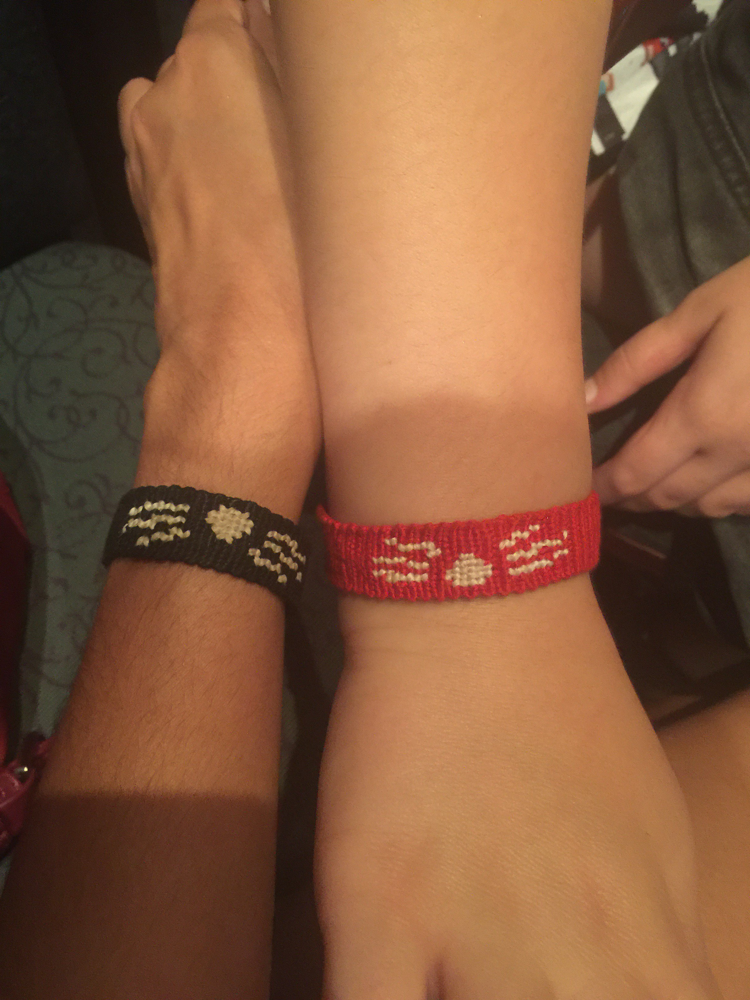
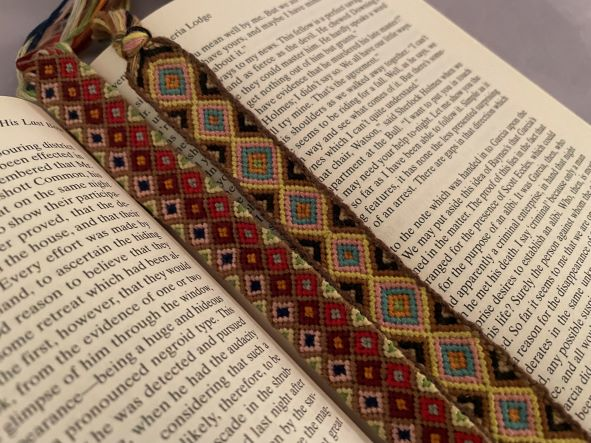

This is the earliest form of art that I can remember deliberately having a plan to learn and pursue. It was winter 2017, and I was in eighth grade. As it approached Christmastime, I was deliberating over what to gift my friends for Christmas when, as expected, I got a friendship bracelet pattern in my Pinterest feed. From there, the plan basically wrote itself; I did some more research, bought way too much string (at that point, I vastly overestimated how much I would need), and asked my friends to give me some colors for their bracelets. I made six friendship bracelets, each with a friend’s name. From there, my first-ever friendship bracelets were born.
 From then on, I was hooked. Each project was more complicated than the last. Notably, I decided to make a bookmark using the friendship bracelet technique (and liked the process so much I made another one). I made a lot of bracelets over the summer of 2018, and would often spend the good part of the day working on them. Making friendship bracelets in particular is very easy to do on the go, because there aren't many moving parts that need to be taken care of. I spent much time sitting in my backyard or the car during road trips, just tying knot after knot. This particular art form holds a special place in my heart, and I find myself returning to it the most consistently over the years. You don’t need any special equipment or setup; you only need string and an idea. Even if I haven’t touched it in a while, sometimes I get the strong feeling to make a bracelet, and the result reminds me why I love making them so much in the first place.